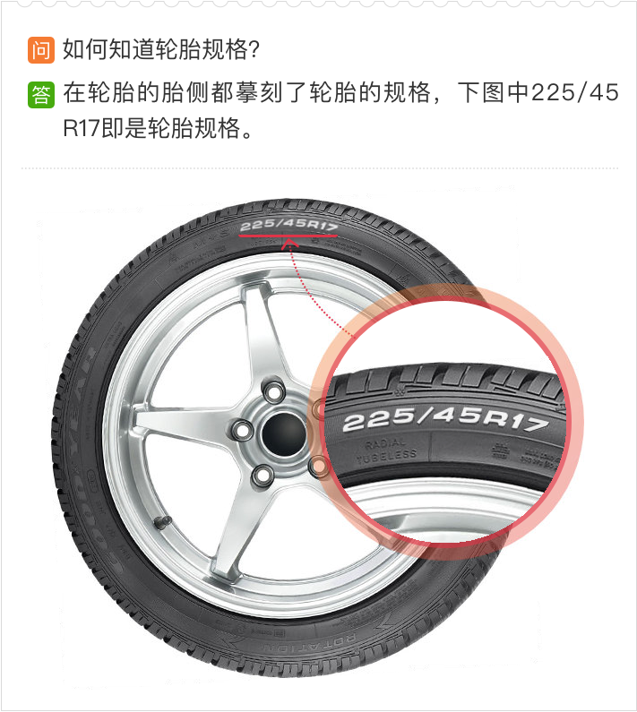
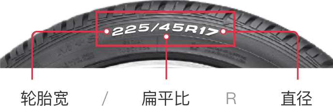

<div class="_content">
  <div class="tiresize">
    <div class="sizeTabs">
      <div @click="tab(0)" :class="{tab: true, selected: slideIndex === 0}">车型适配</div>
      <div @click="tab(1)" :class="{tab: true, selected: slideIndex === 1}">自选规格</div>
    </div>
    <tuhu-swiper :haspagination="false" :on-slide-change-start="onSlideChangeStart" :slide-index="slideIndex">
      <div class="swiper-slide" slot="content">
        <div class="carSize">
            <div class="carInfo">
              
              <span class="brand" v-cloak>{{vehicle}}</span>
            </div>
            <div class="sizeList">
              <div v-if="tires.length < 1" :class="{size: true, selected: true}">没有适配规格</div>
              <div v-else @click="selectedCar(item)" :class="{size: true, selected: item === tireIndex}" v-for="(item, index) in tires" v-once v-cloak>{{item}}</div>
            </div>
            <div class="que">
              
            </div>
          </div>
      </div>

      <div class="swiper-slide" slot="content">
        <div class="selfSize">
            
            <div class="find">
              <tuhu-picker :formatvalue="formatvalue" :cols="cols" :native="true">
                <input slot="content" class="findInput" placeholder="轮胎宽／扁平比 R 直径" type="text" readonly="" />
              </tuhu-picker>
              <div class="findBtn" @click="selectedCar()">查找</div>
            </div>
          </div>
      </div>
    </tuhu-swiper>
  </div>
</div>
